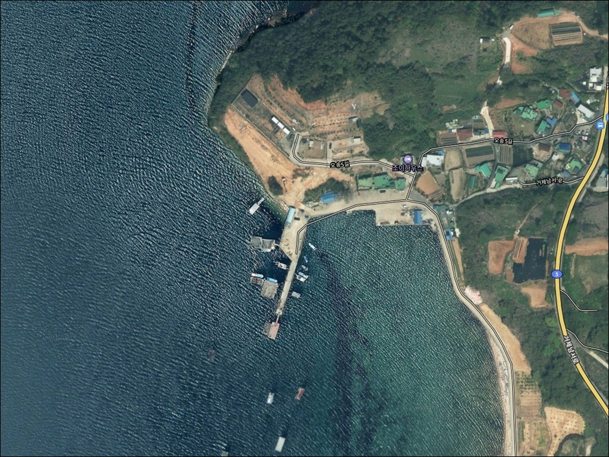
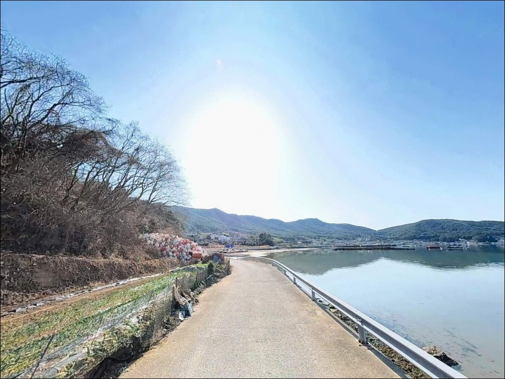
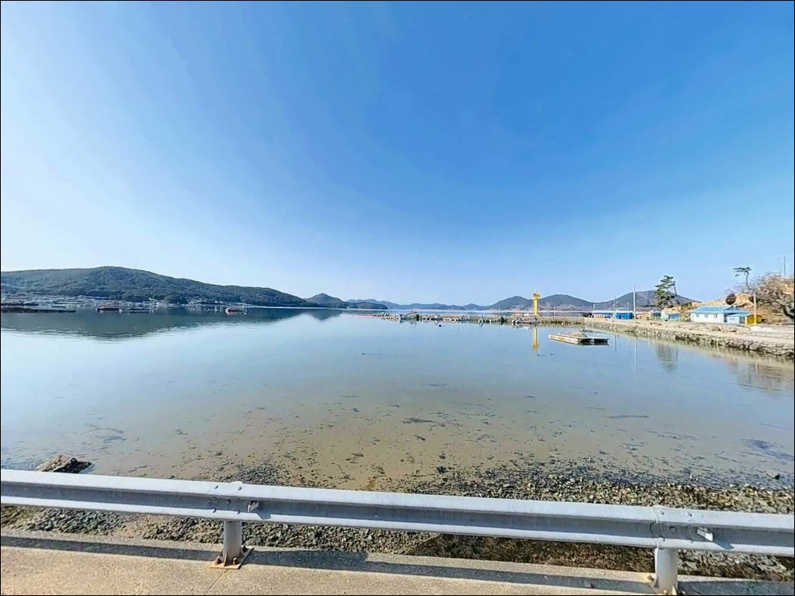
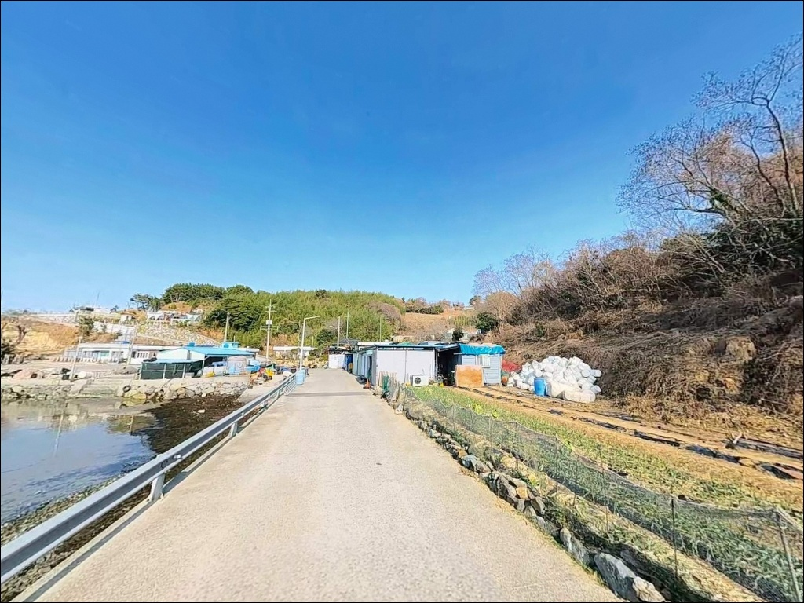
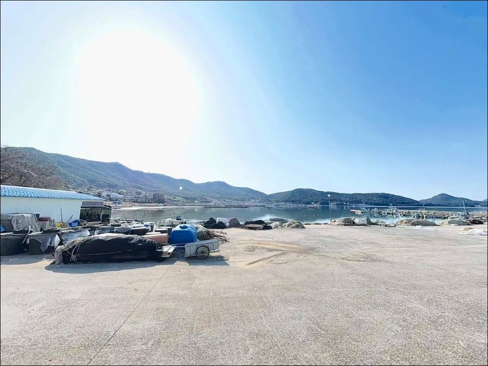
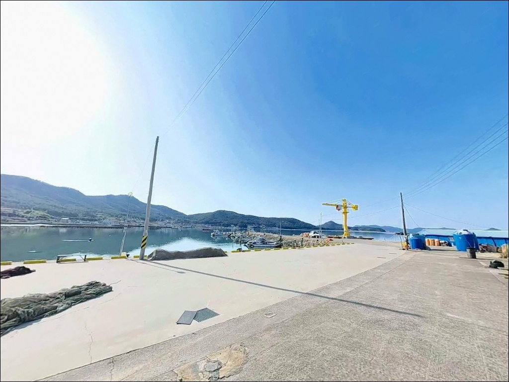
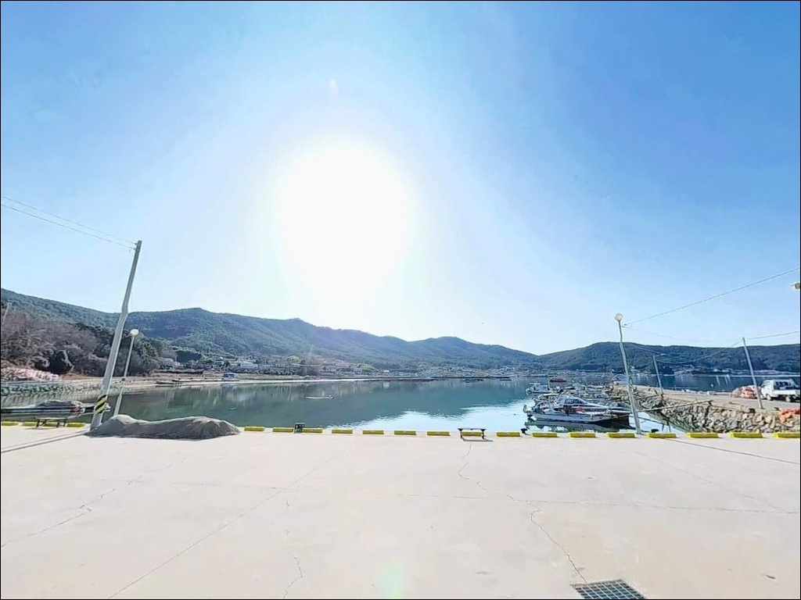
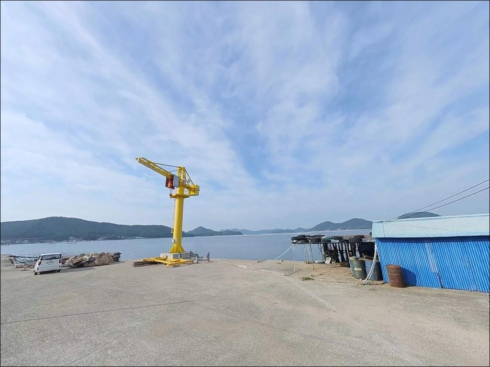
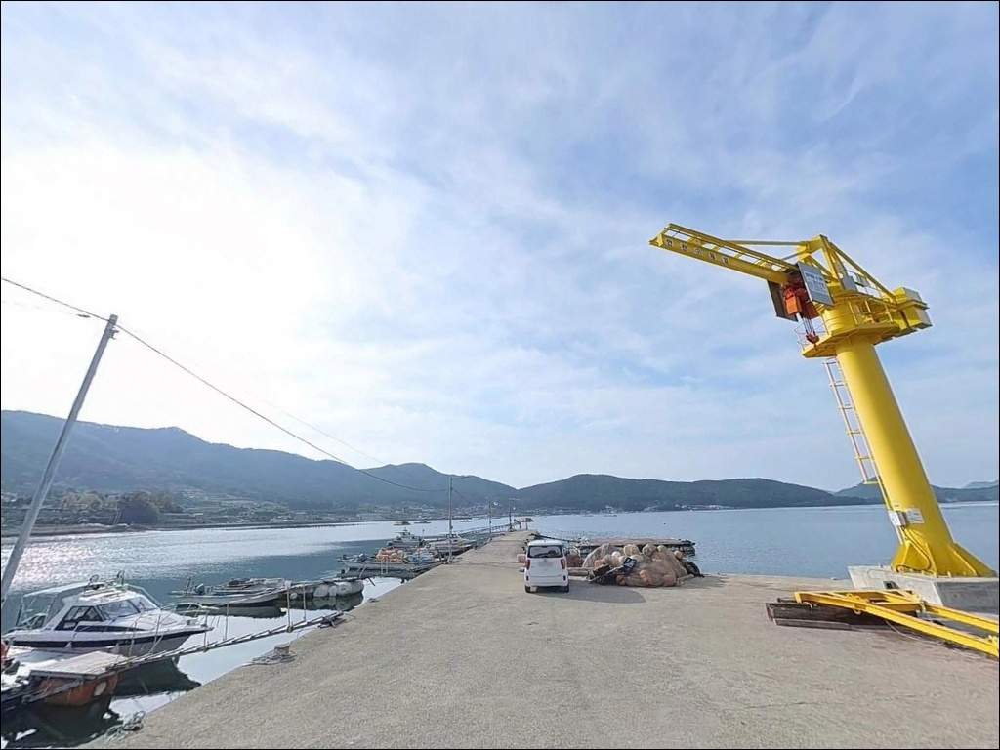

사리 물때엔 채비만 가라앉던 거제 오송리선착장, 조금 전후에 살아난 입질
이 페이지에는 광고(제휴 링크 포함)가 있으며, 광고 링크를 통해 구매하면 운영자가 판매 수익 또는 수수료를 받을 수 있습니다. 포인트 사진: 카카오맵 스카이뷰·로드뷰. 이 페이지의 지도·사진 이미지는 카카오맵의 실제 서비스 이미지와 다를 수 있습니다.


포인트 안내
오송리선착장
경남 거제시 동부면 오송리 430-6
오송리선착장에서 가장 많이 틀리는 판단은
물때 확인을 건너뛰는 것입니다.
조금 전후를 노려야 입질이 살아나는 내만 구조인데,
사리 전후에 진입하면 조류 없이
채비가 바닥에 가라앉기만 합니다.
물때 한 줄이 조과의 전부를 가르는 포인트입니다.
거제도 서쪽 해안, 산달도와 마주보는 동호만 안쪽에
자리한 이 선착장은 외해의 파도와 강한 조류가
차단된 조용한 내만형 구조입니다.
규모가 작고 온라인 정보가 거의 없어
아직 많이 알려지지 않은 포인트지만,
원투낚시와 루어 생활낚시에 잘 맞는 지형을
갖추고 있습니다.
이 글은 오송리선착장의 진입 여건,
지형 구조, 낚시 방식 적합성에 집중합니다.
조황 단정이나 특정 어종 보장은
이 글의 범위에 포함되지 않습니다.

1. 포인트 위치 및 진입 동선 분석
오송리선착장은 거제시 동부면사무소 방향에서
해안 도로를 따라 진입하는 경로로 접근합니다.
거제중앙로에서 마을 안길로 꺾어 들어가면
선착장까지 포장도로가 이어지는 구조이며,
급경사 구간은 없으나 마을 안길 구간에서
도로 폭이 좁아지는 구간이 포함되어 있습니다.
승용차 기준으로는 진입에 큰 어려움이 없지만,
대형 SUV나 캠핑 장비를 탑재한 차량이라면
출발 전 위성지도로 마을 안길 구간을
반드시 확인하고 가는 편이 안전합니다.
선착장 인근에 회차 공간이 확보되어 있어
진입 후 방향 전환은 가능한 편입니다.
주차는 선착장 진입부 공터와
마을 도로 가장자리 갓길을 활용합니다.
선착장 진입부 공터는 차량 2~3대 수용이 가능한 면적으로,
어선 하역 공간으로 사용되는 곳이기도 합니다.
어선 이동 동선과 겹치지 않는 자리를
먼저 파악하는 것이 우선입니다.

2. 차박 환경 평가 및 야간 체류 여건
동호만 안쪽에 위치한 내만형 구조 덕분에
남서풍을 제외하고는 바람 영향이 적고
파도도 잔잔한 편입니다.
낚시를 마친 뒤 조용히 하룻밤 머무는 용도로는
파도 소음과 흔들림 걱정이 없는 편이라
차박 대기 환경으로 나쁘지 않습니다.
선착장 진입부 공터와 해안 평탄지가
차박 후보지로 기능합니다.
민가와의 이격 거리가 어느 정도 확보된 구조라
프라이버시는 상대적으로 양호하지만,
새벽부터 어업인들의 작업이 시작되므로
주차 위치는 어선 동선을 먼저 파악한 뒤 결정해야 합니다.
선착장 발판 구간의 야간 조명은 제한적입니다.
마을 가로등이 마을 안길 위주로 설치되어 있어
선착장 끝단에서의 야간 작업에는
개인 헤드랜턴이 반드시 필요합니다.
차량 내 취침 전 선착장 끝단 발판 구간의
추락 위험 지점을 낮에 미리 확인해 두는 것이
야간 안전 사고를 예방하는 방법입니다.


3. 주변 편의시설 및 인프라 현황
오송리 반경 3km 이내에는
편의점이나 대형 마트를 기대하기 어렵습니다.
동부면 소재지 방향으로 약 4~5km 이동하면
소규모 상가와 식당이 있으며,
완전 자급 체제로 진입하는 것이
현실적인 준비 방식입니다.
편의점은 동부면 구천리 방면으로
차량 약 10~15분 거리에서 이용이 가능합니다.
연료는 동부면 산양리 방향 주유소를
이용하는 편이 효율적이며,
출발 전에 식수, 얼음, 낚시 소품을
충분히 갖추고 현장에 진입하는 것이 기본입니다.
내항 인근에 공용 화장실이 소재한 것으로 확인되나,
운영 여건은 방문 시 직접 확인이 필요합니다.
응급 상황 발생 시 거제백병원까지
차량으로 약 20분 소요됩니다.

4. 낚시 포인트 방문 전 체크해야 할 항목
오송리선착장 방문에서 가장 먼저 할 일은
바다타임에서 오송리방파제 기준 물때를 확인하는 것입니다.
이 해역은 내만권 특성상 조류가 완만하지만,
조금 전후 물때가 입질 패턴과 직결됩니다.
사리 전후에는 채비를 내려도 반응이 없는
시간대가 길어지므로 물때 계획이 우선입니다.
거제 동부면 조황 또는 가배항 낚시로
최신 조황을 검색해 보는 것이
출발 전 필수 과정입니다.
온라인 정보가 많지 않은 포인트인 만큼
인근 가배마을 방파제 기준 조황을
동일 해역 참고 자료로 활용하는 편이 현실적입니다.
펄 바닥 구조라 채비 안착이 빠른 편입니다.
원투 채비는 바닥층에 빠르게 가라앉으므로
봉돌 무게를 상황에 맞게 조절하는 것이 중요하고,
여분 채비는 넉넉하게 준비합니다.
야간 낚시를 병행할 계획이라면
헤드랜턴과 구명조끼는 필수이며,
선착장 끝단 발판에서 미끄럼 방지 신발을
착용하는 것이 기본 안전 수칙입니다.

5. 지형 기반 낚시 여건 분석
오송리선착장은 산달도와 거제 본섬 사이
수로가 만들어내는 완만한 조류와
동호만의 잔잔한 수면이 겹치는 지점에 있습니다.
거제 지명 기록에서 이 해역을
"호수 같은 바다"로 표현할 만큼
외해 파도 영향이 차단된 조용한 수면 구조입니다.
선착장 끝단과 외항 방향으로 갈수록
수심이 3~5m 이상으로 깊어지는 구간이 형성됩니다.
저질은 펄과 모래 혼합 구조로,
원투 채비가 바닥에 빠르게 안착하는 편입니다.
선착장 좌우 연안 경계부는
수심 변화가 시작되는 지점으로
탐색 우선 구간으로 활용할 만합니다.
내만형 포인트란 외해의 직접적인 파도와
강한 조류 영향이 차단된 만 안쪽에 형성된
낚시 공간을 말합니다.
오송리는 이 구조 덕분에
바람과 파도에 민감한 찌낚시나 에깅에도
불리하지 않은 조건을 갖추고 있습니다.
다만 조류가 약한 만큼
조금 전후 타이밍을 정확히 맞춰야
입질이 살아나는 포인트입니다.
출조 전에 거제 동부면 일대 조황을
꼭 검색해 보시기 바랍니다.


낚시 스타일별 오송리 지형 활용 기준
이 포인트에서 가장 잘 맞는 낚시는
원투낚시입니다.
원투낚시란 무게 있는 봉돌을 달아
멀리 캐스팅해 바닥층 어종을 노리는
낚시 방식입니다.
선착장 끝단에서 외항 방향으로 채비를 보내면
펄 바닥 구간에서 도다리·노래미·붕장어 계열을
기대해 볼 수 있는 지형 조건입니다.
청갯지렁이나 오징어살 미끼로
바닥층을 공략하는 방식이 이 수심대에 적합합니다.
루어낚시는 선착장 끝단과
수심 변화가 생기는 연안 경계부 중심으로
지그헤드 채비를 활용합니다.
수로 인근에서 웜 채비로 바닥층을 탐색하면
볼락·우럭 계열을 기대해 볼 수 있습니다.
가을철 야간에는 선착장 주변에
갑오징어와 쭈꾸미가 유입되는 패턴이
이 해역에서 확인됩니다.
에깅 채비로 선착장 입구와 슬로프 주변을
탐색하는 방식도 가을 시즌에 유효합니다.
찌낚시는 조류가 약한 시간대에
가벼운 저부력찌로 느리게 흘리는
전유동 채비가 이 포인트에 잘 맞습니다.
수심 2~3m 구간에서 반유동 채비를 사용하면
감성돔·벵에돔을 노려볼 수 있으며,
조류가 살아나는 조금 전후에 흘림 조건이
가장 좋아지는 편입니다.
선착장 끝단에서 외항 방향으로 채비를 보낼 때
조금 전후 물때가 맞아야
바닥층 입질이 살아납니다.

7. 대안 포인트 및 플랜 B 동선
오송리선착장이 기대에 못 미칠 때
가장 먼저 이동할 곳은
약 3.2km 거리의
가배마을 방파제입니다.
동일 해역에 자리한 바다타임 등재 포인트로,
오송리보다 방파제 규모가 크고
발판 여건이 양호한 편입니다.
같은 해역 조류와 어종 패턴이 적용되므로
물때 계획을 그대로 유지해도 됩니다.
약 5.1km 거리에
쌍근마을 방파제가 있습니다.
규모 있는 방파제로 원투와 찌낚시 모두 가능하며,
거제 남부권 어종 패턴이 함께 적용됩니다.
오송리처럼 규모 작고 온라인 조황 정보가 적은
포인트일수록 출발 전 인근 가배항 조황을
먼저 확인하는 것이 현실적인 방법입니다.
남부면 방향 약 10km 거리에
다대다포항이 있습니다.
국가어항으로 규모 있는 방파제와
편의시설이 갖춰진 거제 남부 대표 낚시 포인트입니다.
낚시점과 식당이 집결되어 있어
조황 정보 수집도 현장에서 가능합니다.
편의시설 보강이 필요할 때
이 동선을 함께 활용하는 편이 효율적입니다.

조용한 내만 구조가 오히려
오송리의 장점입니다
에깅이나 원투 생활낚시를 즐기는 낚시인이라면
오송리선착장의 내만형 지형은
잘 맞는 구조입니다.
파도 걱정 없이 조용한 수면 위에서
바닥층을 탐색할 수 있고,
아직 많이 알려지지 않아
자리 경쟁 없이 포인트를 여유롭게
쓸 수 있는 곳이기도 합니다.
다만 물때 확인 없이 진입하거나,
편의시설을 기대하고 가면
허탕으로 끝나는 방문이 될 수 있습니다.
물때 확인, 진입로 사전 점검, 완전 자급 준비,
이 세 가지를 갖추고 간다면
거제 동부면의 조용한 낚시 포인트를
제대로 즐길 수 있는 곳입니다.
편의시설 없는 한적한 어촌 선착장 옆에
차를 세우고 조용히 낚싯대를 드리우는
낚시와 차박 동시 여행자에게,
오송리는 한번쯤 먼저 답사해둘 만한 포인트입니다.